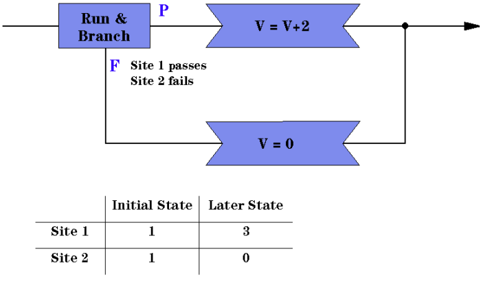

Assignment of User Variables
As in a single-site testflow, you can define and use User Variables in a multisite testflow. The Variables exist for each site individually, but have the same names and initial values for all sites. In the testflow, however, they may be changed to different values for different Sites in different branches. See the figure below.

You can also provide suitable user procedures to run site-specific initializations if required.
Functional changes
- Introduced before SmarTest 6.3.2